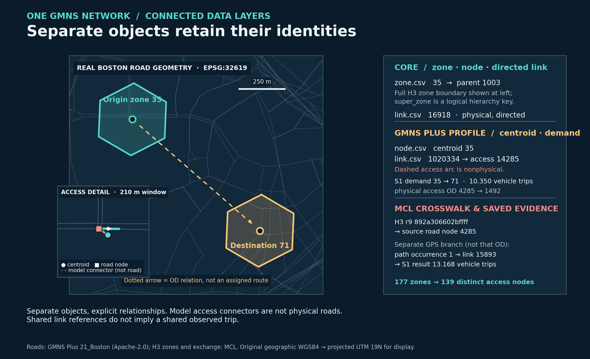
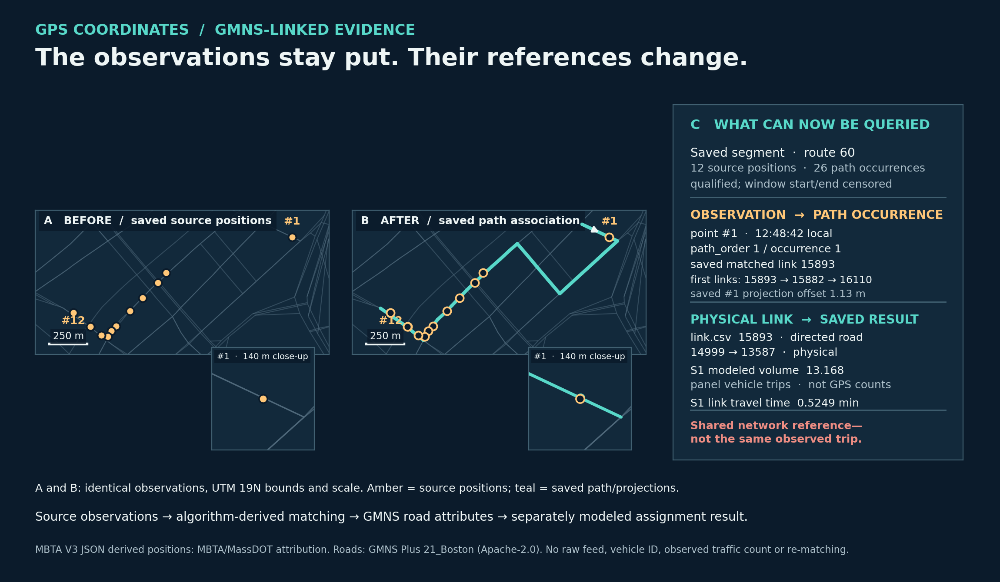

Documentation / Boston GMNS foundation and toolchain alignment
Boston GMNS foundation and toolchain alignment
The actual exchange tables are a new, reversible interface to the existing four-stage/GPS example—not a different demand model. Open the network links, nodes, zones, S1 or S2 panel demand, then use the ID crosswalk to return to the original H3 and road IDs. Profile, manifest, tool usage and commands make the format checkable.
| Object | Exchange table / fields | Authority | Actual producer → consumer; evidence and scope |
|---|---|---|---|
| Physical roads | node.csv; link.csv with directed, dir_flag, WKT, source IDs, source hourly capacity |
GMNS core node/link; accepted MCL fields prefixed mcl_solver_ |
GMNS Plus 21_Boston → MCL adapter and pinned GMNS Plus Level 2 reader. 2,852 nodes, 5,091 directed physical links. |
| Fine zones / boundaries | zone.csv zone_id,boundary,super_zone; H3 extension fields |
GMNS core zone plus MCL H3 fields | 177 H3 r9 full-cell polygons; clipped-core geometry retained separately. |
| Hierarchy | zone.csv.super_zone; id_crosswalk.csv original H3 IDs |
GMNS optional hierarchy plus MCL mapping | Nine r7 parents are aggregation objects, not additional loaded OD origins. |
| Centroids and access | node.csv centroid rows; 354 nonphysical link.csv arcs; id_crosswalk.csv |
GMNS Plus integer centroid convention; MCL connector semantics | 177 centroids map to 139 distinct physical nodes without merging H3 identities. No arbitrary connector cost/through-routing claim. |
| Panel zonal demand | demand_S1.csv, demand_S2.csv exactly three fields; selected_demand_ledger.csv |
GMNS Plus consumer profile; MCL scenario ledger | Frozen person-to-vehicle crosswalk → 26 H3 OD pairs/scenario; 202.078384 / 202.070733 modeled vehicle trips. Full regional purpose/time OD remains in separate full-data asset. |
| Physical solver view | mcl_solver_* link fields and roundtrip CLI |
MCL extension, not core GMNS | Export → read → original 5,091-row S1/S2 link inputs, 26 physical-node OD pairs, maximum OD error 1.78e-15; no solver rerun. |
| GPS/service evidence | gps_path_links.csv source link_id; transit_shape_conflation.csv matched link; transit_stop_route_relation.csv access node |
MCL evidence extension; native GTFS IDs separate | Accepted mapmatching4gmns/mapmatcher4gmns roles; MBTA V3 JSON positions, not GTFS-Realtime. 581 GPS path-link rows, 56 planned-shape link rows, and 5,520 stop-route rows (2,614 with candidate physical access) retain quality/status distinctions. |
| Corridor and saved results | corridor_link.csv, assignment_result_by_scenario.csv |
MCL extensions | One ordered 23-link corridor and 5,091 saved road result rows join by original physical link_id. Not official TAPLab output. |
The pinned community GMNS 0.96 schemas are bundled here; the actual GMNS Plus Dataset structural reader at commit 116447ab641cca1ed34797d019c8e704063393c3 read both new node/link/demand scenarios at Level 2 with zero errors/warnings. It does not parse zone.csv at that level; our separate project runner validates that table against the pinned upstream zone schema. This is a structural/format result, not simulation, connector cost suitability, observed-volume readiness, empirical validation or supervisor approval. The exact teacher grid2demand2 and competition-specific target remain unverified. The tool usage register separates what was run from what is merely referenced.
One network, multiple connected data layers

Separate objects, explicit relationships. Model access connectors are not physical roads. Shared link references do not imply a shared observed trip. The geographic panel is transformed from source EPSG:4326 to metric EPSG:32619 for display. Its straight dotted arrow shows a zonal OD relation, not an assigned road route; the inset shows the true projected 24.97 m node-to-node access geometry. Parent 1003 is a logical super_zone relation, not a clipped polygon invented for this figure.
| Record and authority | Actual key/value | What the join does |
|---|---|---|
GMNS core zone.csv |
zone_id=35, name=h3r9:892a306602bffff, super_zone=1003; parent name h3r7:872a30660ffffff |
Retains the actual fine H3 boundary and its r7 hierarchy key. |
GMNS Plus profile node.csv |
centroid node_id=35; physical access node_id=14285 |
Separate centroid and physical road node. |
MCL id_crosswalk.csv |
origin 35: physical_access_node_id=14285, source 4285; destination 71: exported access 11492, source 1492 |
Maps H3 and exported IDs without merging zones. |
GMNS Plus profile / MCL semantics link.csv |
outbound access link_id=1020334, 35 → 14285; physical outgoing link_id=16918, 14285 → 15112 |
The connector is nonphysical and mcl_gps_match_allowed=false; the road is physical and directed. |
GMNS Plus profile demand_S1.csv |
35 → 71, volume=10.349852758647414; crosswalked physical access OD 4285 → 1492 |
Modeled fixed-panel vehicle trips, aggregated from eligible ledger rows. This row does not say which physical road the OD used. |
| Separate MCL evidence/result branch | route-60 saved path occurrence 1 → link_id=15893 → S1 result 13.167906406832085 |
A shared physical-link key supports a separate lookup; it is not the above OD's trip or an observed road count. |
The full r9 H3 ID, exported integer, source physical-node ID and GMNS link ID are different namespaces. The selected 177 fine zones keep their identities across 139 distinct access nodes. The published figure-source record supplies exact public CSV hashes and selected IDs; the renderer reads those same files. The minimal route-60 display sample retains only 12 already approved derived positions, 26 ordered path rows and one quality row, with source hashes and no vehicle-identity field; the full saved GPS tables are not required in the upload set.
From GPS coordinates to GMNS-linked evidence

Panels A and B use the same 12 source positions, EPSG:32619 projection, bounds and scale. Their paired point-1 close-ups use identical 140 m windows. B adds only the saved matched path, projected positions and point-to-projection offsets; it does not move the actual vehicle or rerun matching. The quality-eligible, qualified saved segment mbtav:4624d3319dcfdec1:s01 (route 60) has 26 ordered path occurrences, with both window ends censored. It was chosen by the stable quality-eligible selection used for the existing Boston GPS illustration, not by the largest offset. One successful saved case is not an independent accuracy estimate.
For narrow screens, the same evidence reads in order: A — source positions on real roads; B — those unchanged positions plus saved projected points and the ordered path; C — point/occurrence 1 joins physical link 15893, whose separately modeled S1 result can be read by link ID. This text preserves the sequence when the full-width map labels are small.
| Record type | Actual key | Reference, status and unit |
|---|---|---|
Source position in sample gps_point_progress.csv |
segment mbtav:4624d3319dcfdec1:s01, point_seq=1, 2026-09-21T12:48:42-04:00 |
Saved original coordinate and algorithm-derived projection; lateral offset 1.128122562325221 m. |
Saved matching in sample gps_path_links.csv |
path_order=1, path_occurrence=1, link_id=15893, direction AB; next links 15882, 16110 |
Ordered algorithm-derived physical-link path. Point 1 is associated with occurrence 1; intermediate occurrences with zero projected points are inferred traversal, not new observations. |
Physical road in link.csv |
link_id=15893, exported physical nodes 14999 → 13587 |
Directed, GPS-match-allowed network geometry and attributes. This is not a nonphysical centroid connector. |
Saved model result in assignment_result_by_scenario.csv |
link_id=15893, s1_volume=13.167906406832085, s1_travel_time=0.5249053659293993 |
S1 aggregate modeled panel vehicle trips and link minutes; delta_status=MODEL_INTERNAL_PANEL_RESPONSE_NOT_OBSERVED_CAUSAL_EFFECT. These are not GPS-derived counts. |
Source observations → algorithm-derived matching → network attributes → separately modeled assignment results. Shared network reference—not the same observed trip. This route-60 spatial example is distinct from the route-749, stop-1788-to-5093 numerical service-feedback event. The former demonstrates reference/link lookup; the latter demonstrates a saved calculation dependency. Neither makes GMNS itself a matcher or proves better prediction. MBTA V3 JSON-derived positions retain MBTA/MassDOT attribution; no raw vehicle feed or exact vehicle identity is redistributed by these figures.
Reproduce the relationships
From the repository root, the existing generic inspector prints separate current relationship examples (its first GPS row need not be the figure segment):
python -B tools/gmns/boston_exchange.py trace --exchange examples/boston/gmns_exchange_r1/data
The separate read-only helper queries the exact displayed zone and eligible segment from published CSVs. It does not create a new path, move a point or update the exchange:
python -B tools/gmns/trace_gmns_figure.py --exchange examples/boston/gmns_exchange_r1/data --gps-dir examples/boston/gmns_exchange_r1/figure_sample --zone-id 35 --segment-id mbtav:4624d3319dcfdec1:s01
For a reproducible image export, run python -B tools/visuals/render_gmns_in_action.py --help and supply the same public paths, selected IDs and an output directory. The helper needs only Python's standard library; rendering additionally uses Matplotlib, Shapely and pyproj. Coordinate reprojection, algorithmic map matching and ID crosswalk lookup are different operations. The core/profile/extension boundaries above also limit interoperability claims: the pinned GMNS Plus Level 2 reader accepted both node/link/demand sets, the zone schema was checked separately, and the round-trip uses declared mcl_solver_* fields—not hypothetical universal core-only solver compatibility.
The four stages and GPS-to-service feedback remain explained in the saved Boston walkthrough. This GMNS exchange is their shared data foundation, not a fifth stage or a claim that every SQLite field is standard GMNS.